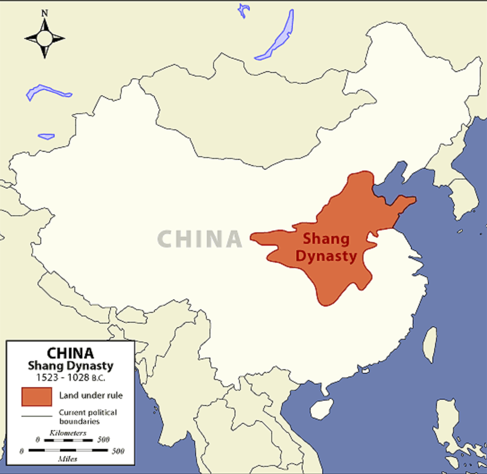
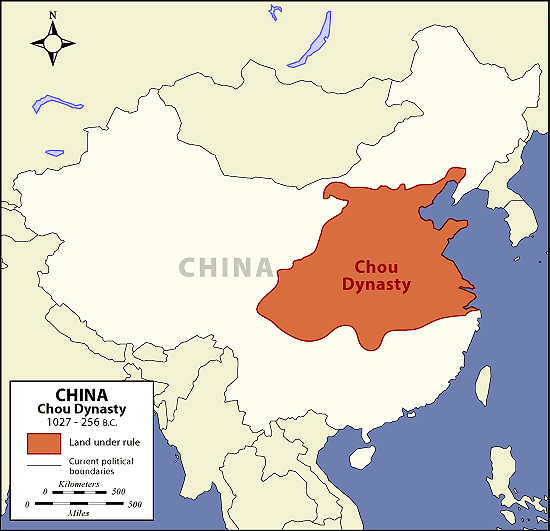
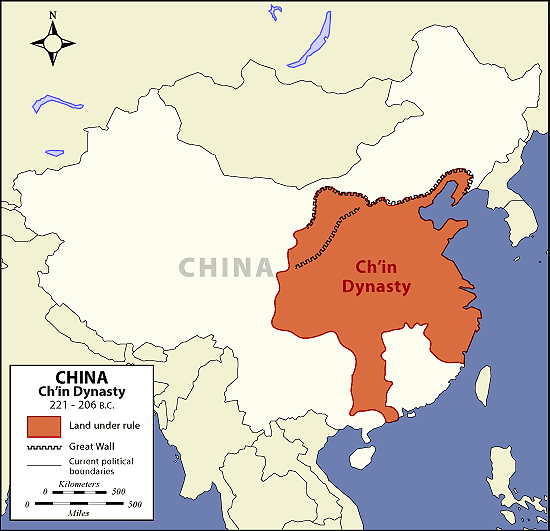
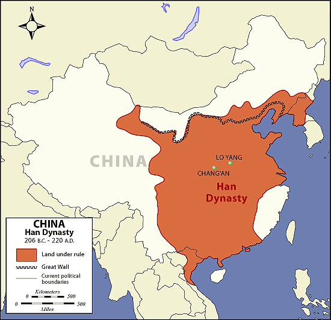

1766-1122 BCE
商
Shang Dynasty
Some info:
This dynasty is the official first dynasty of China.
China first began to develop its formal writing system during this dynasty. People carved pictographic characters onto bones and shells. These are called 'oracle bone' characters. From the inscriptions on tortoise shells it is inferred that people of the Shang Dynasty used calendars and developed knowledge of astronomy and math.
Shang Dynasty artisans created bronze works, ceramics, and jade trinkets. The Shang army also had horse-drawn chariots.
Number of rulers: 29-30
The basics of traditonal Chinese fashion were established during this dynasty. People wore narrow, cuffed, knee-length shirt jackets tied with a sash and a narrow ankle-length skirt. They then wore a peice of cloth that hung down to the knees. Clthes were vivid in primary colors and did not vary among people of different social class.

1122-221 BCE
周
Zhou Dynasty
Some info:
During the Zhou Dynasty there were significant cultural contributions in agriculture, education, military organization, Chinese literature, music, philosophical schools of thought, social stratification, as well as political and religious innovations.
The Shang dynasty laid foundations for these developments but the Zhou Dynasty is credited for the form that they are recognized as.
The Zhou coexisted with the Shang until the overthrowing of Di Xin.
The "I Ching"/"Book of Changes" was written in this dynasty. This was a book of divination that first introduced the concept of yin-yang.
Confucianism, Daoism, and Legalism - ancient Chinese philosphies emerged during this time.
Number of rulers: 37
The Zhou Dynasty mrked the begining of clothing turning to a statement of social status and society rank. Colors that the Emperor chooses to wear are forbidden to be worn by others. The dress jacket is also first introduced in this time. The dress jacket consisted of an upper short skirt jacket, tucked inside a lower floor-length skirt, a long silk belt tied around the waist and cotton shawl worn around the arms.

221-206 BCE
秦
Qin Dynasty
Some info:
One of China's shortest dynasties.
Qin Shihuang conquered all the rival kingdoms and brought total unity to China.
He standardized writing, systems of currency, weights and measures, and conducted a census of his people.
The Great Wall of China was built during this time and so was the Terracotta Warriors.
Number of rulers: 2
Questioning why the clothes are the same as the Zhou dynasty? That is because this dynasty was too short to make any changes to fashion. Emperor Qin was not around long enough to completely unify Chinese fashion but he unified color. He chose black as the uniform color of fashion because black represented the power of water and the Zhou dynasty's favored color was red, the symbol of fire. Water extiguishes fire.

206-581 BCE
汉
Han Dynasty
Some info:
The Han Dynasty has a deep influence in Chinese culture. The majority of China's ethnic group is Han Chinese, traditional dress is Hanfu (汉服), and language is called Hanyu (汉语).
During this dynasty, the territory was expanded into modern-day Gansu province.
Confucianism was patronized by the emperor and the first university was founded for the study of Confucianism philosphies.
Paper, water, clocks, sundials, silk, seismographs were all invented during this time. It was a high point of culture and art and even considered to be a period of ethnic unification.
Number of rulers: 24
The traditional Chinese dress 汉服 (hanfu) got its name from this dynasty. Han clothing was elegant and dignified and the royal court maintained the Qin's favor of dressing in black and formal dresses had edges of red.
